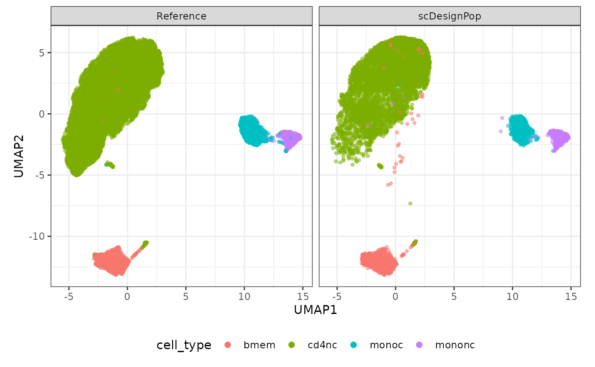

scDesignPop Quickstart
Chris Dong
Department of Statistics and Data Science, University of California, Los Angelescycd@g.ucla.edu
Yihui Cen
Department of Computational Medicine, University of California, Los Angelesyihuicen@g.ucla.edu
2 May 2025
Source:vignettes/scDesignPop.Rmd
scDesignPop.Rmd
library(scDesignPop)
library(SingleCellExperiment)
library(SummarizedExperiment)
library(scater)
theme_set(theme_bw())Introduction
scDesignPop is a simulator for population-scale single-cell RNA-sequencing (scRNA-seq) data. For more information, please check the Articles on our website: (https://chrisycd.github.io/scDesignPop/docs/index.html).
Step 1: construct a data list
To run scDesignPop, a list of data is required as input. This is done
using the constructDataPop function. A
SingleCellExperiment object and an eqtlgeno
dataframe are the two main inputs needed. The eqtlgeno
dataframe consists of eQTL annotations (it must have cell state, gene,
SNP, chromosome, and position columns at a minimum), and genotypes
across individuals (columns) for every SNP (rows). The structure of an
example eqtlgeno dataframe is given below.
load("/home/ycen/proj/scEQTLsim/data/tutorials/example_sce.rda")
load("/home/ycen/proj/scEQTLsim/data/tutorials/example_eqtlgeno.rda")
data_list <- constructDataPop(
sce = example_sce,
eqtlgeno_df = example_eqtlgeno,
new_covariate = as.data.frame(colData(example_sce)),
overlap_features = NULL,
sampid_vec = NULL,
ct_copula = TRUE,
slot_name = "counts",
snp_model = "single",
cellstate_colname = "cell_type",
feature_colname = "gene_id",
snp_colname = "snp_id",
loc_colname = "POS",
chrom_colname = "CHR",
indiv_colname = "indiv",
prune_thres = 0.9
)Step 2: fit marginal model
Next, a marginal model is specified to fit each gene using the
fitMarginalPop function.
Here we use a Negative Binominal as the parametric model using
"nb".
marginal_list <- fitMarginalPop(
data_list = data_list,
mean_formula = "(1|indiv) + cell_type",
model_family = "nb",
interact_colnames = "cell_type",
parallelization = "pbmcapply",
n_threads = 20L,
loc_colname = "POS",
snp_colname = "snp_id",
cellstate_colname = "cell_type",
indiv_colname = "indiv",
filter_snps = TRUE,
snpvar_thres = 0,
force_formula = FALSE,
data_maxsize = 1
)Step 3: fit a Gaussian copula
The third step is to fit a Gaussian copula using the
fitCopulaPop function.
set.seed(123, kind = "L'Ecuyer-CMRG")
copula_fit <- fitCopulaPop(
sce = example_sce,
assay_use = "counts",
input_data = data_list[["new_covariate"]],
marginal_list = marginal_list,
family_use = "nb",
copula = "gaussian",
n_cores = 2L,
parallelization = "mcmapply"
)
RNGkind("Mersenne-Twister") # resetStep 4: extract parameters
The fourth step is to compute the mean, sigma, and zero probability
parameters using the extractParaPop function.
para_new <- extractParaPop(
sce = example_sce,
assay_use = "counts",
marginal_list = marginal_list,
n_cores = 2L,
family_use = "nb",
indiv_colname = "indiv",
new_covariate = data_list[["new_covariate"]],
new_eqtl_geno_list = data_list[["eqtl_geno_list"]],
data = data_list[["covariate"]],
parallelization = "pbmcmapply"
)Step 5: simulate counts
The fifth step is to simulate counts using the
simuNewPop function.
set.seed(123)
newcount_mat <- simuNewPop(
sce = example_sce,
mean_mat = para_new[["mean_mat"]],
sigma_mat = para_new[["sigma_mat"]],
zero_mat = para_new[["zero_mat"]],
quantile_mat = NULL,
copula_list = copula_fit[["copula_list"]],
n_cores = 2L,
family_use = "nb",
nonnegative = TRUE,
input_data = data_list[["covariate"]],
new_covariate = data_list[["new_covariate"]],
important_feature = copula_fit[["important_feature"]],
filtered_gene = data_list[["filtered_gene"]],
parallelization = "pbmcmapply"
)Step 6: create SingleCellExperiment object using simulated data
After simulating the data, we can create a
SingleCellExperiment object as follows.
Step 7: visualize using UMAP
The simulated data can be visualized using a UMAP plot as follows.
source("/home/ycen/proj/scEQTLsim/tutorial/plot_reduceddim_pop.R")
logcounts(simu_sce) <- log1p(counts(simu_sce))
set.seed(123)
compare_figure <- plot_reduceddim_pop(ref_sce = example_sce,
sce_list = list(simu_sce),
name_vec = c("Reference", "scDesignPop"),
assay_use = "logcounts",
if_plot = TRUE,
color_by = "cell_type",
n_pc = 10)
#> Warning: Using an external vector in selections was deprecated in tidyselect 1.1.0.
#> ℹ Please use `all_of()` or `any_of()` instead.
#> # Was:
#> data %>% select(color_by)
#>
#> # Now:
#> data %>% select(all_of(color_by))
#>
#> See <https://tidyselect.r-lib.org/reference/faq-external-vector.html>.
#> This warning is displayed once every 8 hours.
#> Call `lifecycle::last_lifecycle_warnings()` to see where this warning was
#> generated.
#> Warning: `aes_string()` was deprecated in ggplot2 3.0.0.
#> ℹ Please use tidy evaluation idioms with `aes()`.
#> ℹ See also `vignette("ggplot2-in-packages")` for more information.
#> This warning is displayed once every 8 hours.
#> Call `lifecycle::last_lifecycle_warnings()` to see where this warning was
#> generated.
plot(compare_figure$p_umap)
Session information
sessionInfo()
#> R version 4.2.3 (2023-03-15)
#> Platform: x86_64-pc-linux-gnu (64-bit)
#> Running under: Ubuntu 22.04.4 LTS
#>
#> Matrix products: default
#> BLAS: /usr/lib/x86_64-linux-gnu/openblas-pthread/libblas.so.3
#> LAPACK: /usr/lib/x86_64-linux-gnu/openblas-pthread/libopenblasp-r0.3.20.so
#>
#> locale:
#> [1] LC_CTYPE=en_US.UTF-8 LC_NUMERIC=C
#> [3] LC_TIME=en_US.UTF-8 LC_COLLATE=en_US.UTF-8
#> [5] LC_MONETARY=en_US.UTF-8 LC_MESSAGES=en_US.UTF-8
#> [7] LC_PAPER=en_US.UTF-8 LC_NAME=C
#> [9] LC_ADDRESS=C LC_TELEPHONE=C
#> [11] LC_MEASUREMENT=en_US.UTF-8 LC_IDENTIFICATION=C
#>
#> attached base packages:
#> [1] stats4 stats graphics grDevices utils datasets methods
#> [8] base
#>
#> other attached packages:
#> [1] scater_1.26.1 ggplot2_3.5.1
#> [3] scuttle_1.8.4 SingleCellExperiment_1.20.1
#> [5] SummarizedExperiment_1.28.0 Biobase_2.58.0
#> [7] GenomicRanges_1.50.2 GenomeInfoDb_1.34.9
#> [9] IRanges_2.32.0 S4Vectors_0.36.2
#> [11] BiocGenerics_0.44.0 MatrixGenerics_1.10.0
#> [13] matrixStats_1.3.0 scDesignPop_0.0.0.9004
#> [15] BiocStyle_2.26.0
#>
#> loaded via a namespace (and not attached):
#> [1] nlme_3.1-164 bitops_1.0-7
#> [3] fs_1.6.4 RcppAnnoy_0.0.22
#> [5] numDeriv_2016.8-1.1 tools_4.2.3
#> [7] TMB_1.9.11 bslib_0.7.0
#> [9] utf8_1.2.4 R6_2.5.1
#> [11] irlba_2.3.5.1 vipor_0.4.7
#> [13] uwot_0.2.2 mgcv_1.9-1
#> [15] colorspace_2.1-0 withr_3.0.0
#> [17] tidyselect_1.2.1 gridExtra_2.3
#> [19] compiler_4.2.3 textshaping_0.4.0
#> [21] cli_3.6.2 BiocNeighbors_1.16.0
#> [23] desc_1.4.3 DelayedArray_0.24.0
#> [25] labeling_0.4.3 bookdown_0.43
#> [27] sass_0.4.9 scales_1.3.0
#> [29] mvtnorm_1.3-1 pbapply_1.7-2
#> [31] pkgdown_2.1.1 systemfonts_1.1.0
#> [33] digest_0.6.35 minqa_1.2.7
#> [35] rmarkdown_2.27 RhpcBLASctl_0.23-42
#> [37] XVector_0.38.0 pkgconfig_2.0.3
#> [39] htmltools_0.5.8.1 lme4_1.1-35.3
#> [41] sparseMatrixStats_1.10.0 highr_0.11
#> [43] fastmap_1.2.0 htmlwidgets_1.6.4
#> [45] rlang_1.1.4 rstudioapi_0.16.0
#> [47] DelayedMatrixStats_1.20.0 farver_2.1.2
#> [49] jquerylib_0.1.4 generics_0.1.3
#> [51] jsonlite_1.8.8 BiocParallel_1.32.6
#> [53] dplyr_1.1.4 RCurl_1.98-1.14
#> [55] magrittr_2.0.3 BiocSingular_1.14.0
#> [57] GenomeInfoDbData_1.2.9 Matrix_1.6-5
#> [59] Rcpp_1.0.14 ggbeeswarm_0.7.2
#> [61] munsell_0.5.1 fansi_1.0.6
#> [63] viridis_0.6.5 lifecycle_1.0.4
#> [65] yaml_2.3.8 MASS_7.3-58.2
#> [67] zlibbioc_1.44.0 grid_4.2.3
#> [69] parallel_4.2.3 ggrepel_0.9.5
#> [71] crayon_1.5.2 lattice_0.22-6
#> [73] beachmat_2.14.2 splines_4.2.3
#> [75] knitr_1.47 pillar_1.9.0
#> [77] boot_1.3-30 codetools_0.2-20
#> [79] ScaledMatrix_1.6.0 glue_1.8.0
#> [81] evaluate_0.24.0 BiocManager_1.30.23
#> [83] nloptr_2.0.3 vctrs_0.6.5
#> [85] gtable_0.3.5 assertthat_0.2.1
#> [87] cachem_1.1.0 xfun_0.52
#> [89] rsvd_1.0.5 ragg_1.3.2
#> [91] viridisLite_0.4.2 tibble_3.2.1
#> [93] pbmcapply_1.5.1 glmmTMB_1.1.9
#> [95] beeswarm_0.4.0